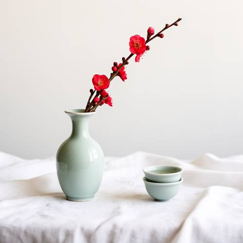
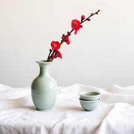
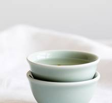
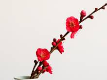

Entity Layout — On a white tablecloth, on the left side of the picture is a celadon va
On a white tablecloth, on the left side of the picture is a celadon vase with a red plum branch, and on the right are two stacked tea cups.


Judge — Direct
- FAILEntity Layout - Two-Dimensional Space — The image shows a celadon vase containing red plum branches positioned on the left side of the frame. To the right of the vase, there is a stack of three tea cups. The prompt specifies 'two stacked tea cups' on the right, but the image depicts three. Therefore, the layout of the specifically described entities is not entirely accurate.
Judge — Continuum
- PASSEntity Layout - Two-Dimensional Space — The image displays a celadon vase with a branch of red flowers, which is positioned on the left side of the composition. To the right of the vase, and thus on the right side of the image, there is a stack of two tea cups. The spatial arrangement of these objects aligns with the prompt.
What the agent did
Thinking
Let me generate this image. The prompt: "On a white tablecloth, on the left side of the picture is a celadon vase with red plum branches in it, and on the right side are two stacked teacups." Let me think about the composition: - White tablecloth (background) - Left: a celadon (qingci) vase — pale greenish-blue stoneware — with a red plum blossom branch sticking out of it - Right: two stacked teacups This is a still-life setup. Let me generate with flux2-dev. Visual details I can fill in: a celadon vase with a subtle crackle glaze, pale blue-green, a slender neck. A red plum blossom branch (prunus mume) with small red flowers and buds on brownish twigs extending out. On the right, two ceramic teacups, one placed on top of the other (stacked). White tablecloth with soft folds. Probably soft, diffused light, a minimal studio-style still life. First let me generate a 1024x1024 image (default). Actually, for a tabletop still life, a slightly horizontal or square aspect ratio might be good. The benchmark says the size is fixed by the harness, so I'll just use the default 1024x1024. Prompt: "A refined still life on a white linen tablecloth: on the left, a celadon porcelain vase with pale blue-green crackle glaze and a slender neck, holding a branch of red plum blossoms with small crimson flowers and buds extending to the right. On the right, two small ceramic teacups neatly stacked one on top of the other. Soft diffused natural light, minimal, calm, white background, high-key." Next, I'll inspect the image: check the placement (vase on the left, stacked cups on the right), that the branch is red plum, and that the celadon color is correct. After that, I'll mark the best one and fix things as needed. Alright, let's get started.
Step 1 — `generate_image`
{
"model": "flux2-dev",
"prompt": "Elegant minimalist still life on a white linen tablecloth with soft folds. On the left side of the picture: a celadon porcelain vase with pale blue-green crackle glaze and a slender neck, holding a branch of red plum blossoms \u2014 thin brown twigs with small vivid red plum flowers and buds extending upward and to the right. On the right side: two small ceramic tea cups stacked neatly, one resting on top of the other. Soft diffused daylight, high-key, clean composition, calm Chinese tea ceremony aesthetic, studio photography."
}Result img_0

Thinking
Let's evaluate the image against the prompt: 1. White tablecloth — yes, a white/linen tablecloth with folds. ✓ 2. Left: celadon vase — yes, a pale blue-green vase with crackle glaze. ✓ 3. Red plum branches — yes, red plum blossoms with buds on brown branches. ✓ (Could be interpreted as "red plum branches" as flowers on a branch — the branch itself is brown, the flowers are red. The prompt "celadon vase with red plum branches" probably means a red plum blossom branch, and that's what we have.) 4. Right: two stacked teacups — yes, two celadon teacups stacked, one on top of the other. ✓ Placement: vase is on the left, cups on the right. ✓ Overall, this is a very good match. Small points that could be improved: the background is plain white/light gray, no problem. The tablecloth fills the bottom. The cups are clearly stacked (one on top of the other). The vase has crackle glaze, nice celadon. To confirm there are no artifacts (for example, the stacking of the cups, the branch emerging from the vase), let's inspect a few regions at higher resolution. Actually, the image looks clean. Let's quickly check the cup area to make sure they are indeed two stacked cups and not one weird cup.
Step 2 — `inspect_region`
{
"image": "img_0",
"roi": [
540,
580,
800,
820
]
}Result img_1

Step 3 — `inspect_region`
{
"image": "img_0",
"roi": [
200,
60,
760,
480
]
}Result img_2

Thinking
Confirmed via inspection: - On the right side there are two stacked teacups — clearly a celadon cup nested on top of another celadon cup. ✓ - The red plum branch with flowers and buds comes out of the vase, and the flowers are vividly red with a proper plum blossom shape. ✓ The composition matches the prompt: white tablecloth, celadon vase with a red plum branch on the left, two stacked teacups on the right. The image is clean and has no obvious artifacts. This is a good result. Mark it as best and stop.
Model
The image matches the prompt well: a celadon vase with crackle glaze sits on the left with a red plum branch blooming out of it, and on the right two celadon tea cups are clearly stacked, all on a white linen tablecloth. The detail checks confirm the cups are properly nested and the plum flowers render cleanly with no artifacts.
Step 4 — `mark_best`
{
"image": "img_0",
"reason": "All prompt elements present and correct: white tablecloth, celadon vase on the left with red plum branch, two stacked tea cups on the right; clean composition with no visible artifacts."
}Thinking
Complete. The marked image is img_0, and this is the final version. Presenting a concise summary.
Model
The final image is ready and marked as best. It shows a minimalist tea-ceremony still life on a white tablecloth: on the left, a pale blue-green celadon vase with a delicate crackle glaze holding a branch of vivid red plum blossoms and buds; on the right, two small celadon tea cups neatly stacked one on top of the other. Soft, diffused lighting keeps the scene high-key and calm.